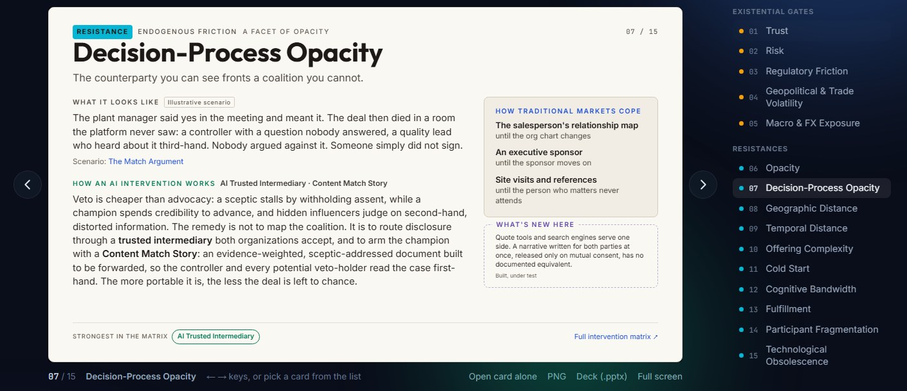

DeeperPoint is building the seven AI interventions into a generic, open-source marketplace engine — not tied to any vertical. Three are built today: matching, the trusted intermediary and input translation. A market sponsor adopts the engine, adds their market’s knowledge and its front end, and skips a decade of rediscovering the same problems.
The DeeperPoint thesis: because the frictions that keep markets thin are common across thousands of markets, the friction-fighting layer can be built once and open-sourced. A sponsor reuses it and adds only their market’s knowledge and its front end — instead of rediscovering the same problems alone.
A market built this way runs on two things: its own knowledge, and a shared engine. The knowledge is a domain wiki: sourced pages that the market’s sponsor writes and keeps, built with an open wiki engine. It is easy to start: an LLM does the drafting, and DeeperPoint’s guides serve as the starter kit. It is never finished, and keeps improving as the market puts questions to it. Ask is how those questions are put: an optional question page over the wiki that answers only from its pages, with citations. It can stand as a service in its own right, or be offered inside the twin and the marketplace. The engine is three components, offered as free, headless server functionality. CommonContext prepares the wiki’s pages and other curated documents for the engine: it splits and embeds them into the reference library that answers are cited from, and it can propose the market’s schema. ClientSynth generates synthetic, marked participants, so the market can be exercised before real ones arrive. Cosolvent does the matching, the confidential disclosure, the Content Match Story and the Deal Brief.
Cosolvent, CommonContext and the wiki engine are under MIT; ClientSynth is under Apache 2.0 with one condition. The suite is deliberately not a shrink-wrap product for any market vertical, and probably can't become one: everything vertical-specific, the wiki first of all, is exactly what the adopter must own. MarketForge is the order in which the parts are used, starting with the wiki.
Getting a new market engine studied and adopted faces the very frictions this site catalogues, so the license was engineered like everything else here. Trust: the code is inspectable, and fork rights are exit rights — no vendor can raise the price after you have built on it. Opacity: there is no “contact us for pricing,” no sales process concealing the real terms. The hidden veto: inside an organization, spending money is what triggers procurement, legal, and budget review — a $0 MIT tool turns a purchase decision into an engineering experiment a single champion can run. Cold start: trying it costs nothing.
To be precise about the boundaries: the engine is free; your wiki, your vertical build and your operations are yours to build and fund. ClientSynth’s one condition is that synthetic participants stay marked as synthetic, are never presented as real, and never enter a market that serves real ones. And because Cosolvent’s ingest schema is open, you can generate synthetic populations with any tool — ClientSynth is a convenience, not a dependency.
The map and the method that join the parts: the path from a domain wiki, through a twin, to a marketplace. Now a public repository of guides.
What the market knows, as sourced pages drafted with an AI model and ruled on by a person. The sponsor’s own: easy to start with an LLM and DeeperPoint’s guides, and continually improving.
A question page over the wiki. Answers come only from its pages, with citations, and what it cannot answer goes back as the next research. A service in its own right, or one offered inside the twin and the marketplace. A working one, over the job-matching wiki, can be tried from the Demos page after an email sign-in.
Turns wiki pages and other curated documents into the embedded reference library the engine cites, and can propose the market’s schema.
Synthetic market populations for testing, demonstration and the cold start, before real users arrive. Apache 2.0 with one condition: synthetic stays marked as synthetic, and never meets real.
The headless marketplace engine: semantic matching, confidential disclosure, the Content Match Story and the Deal Brief.
One card per reason a market stays thin, what the engine does about it, and how traditional markets have always coped. Fourteen cards are the fourteen challenges of the Intervention Matrix. The fifteenth, Decision-Process Opacity, takes one facet of Opacity and gives it a card of its own.

The system runs the interventions as one continuous flow, from raw inputs to a deal that is ready to hand off:
Most marketplace platforms aim to close deals. DeeperPoint aims to get deals ready to close. The platform’s primary output is the Deal Brief — a structured, non-binding summary of everything two parties have explored and agreed. It captures who the parties are, what they propose to exchange, what remains open, and which professional intermediaries need to act next. It is the final milestone of the Content Match Story — the same document the parties have been reading and refining since the day they matched.
The Deal Brief is not a contract and is never intended to become one. It is the compilation of deal notes that all parties hand to their attorneys, bankers, insurers, and freight carriers — to speed the production of the real, authoritative agreement documents.
That is where DeeperPoint's deal-making function is complete. The Deal Brief is as far as friction reduction can go while staying generic — the last step common to every market. Everything after it — contracts, payments, fulfillment, analytics, advertising, fee-for-service — lies within each adopting sponsor’s span of control and beyond DeeperPoint’s purview.
The owner of a market vertical adopts the DeeperPoint suite and supplies two things. The first is the market’s knowledge, kept as a wiki of sourced pages that only people in the market can write. The second is a market-specific front end: branding, participant UX, legal templates, payment rails, sponsorship services. With modern AI coding tools — Claude Code goes a long way — an adopter can produce a working digital twin of their market, and perhaps even a modest working marketplace site, in a fraction of the traditional effort.